The word "laser" in laser cutting stands for Light Amplification by Stimulated Emission of Radiation. A powerful laser beam is the source that melts, burns, or vaporizes the material. Optics such as mirror and lens help in focusing the laser beam onto material surface.
This non-contact, thermal-based fabrication process is ideal for several materials, including wood, glass, paper, metal, plastic, and gemstone. It’s also capable of producing intricate parts without needing a custom-designed tool.
Electronically controlled motors move the laser head to cut or engrave the desired shape into the material of the workpiece. The assist gas is from the compressor. Blowing compressed air at the area being laser cut helps prevent flare ups and keeps things clean by directing vaporized material downward and away from the cut, and away from the machine’s lenses and mirrors.
Laser cutters in SP:
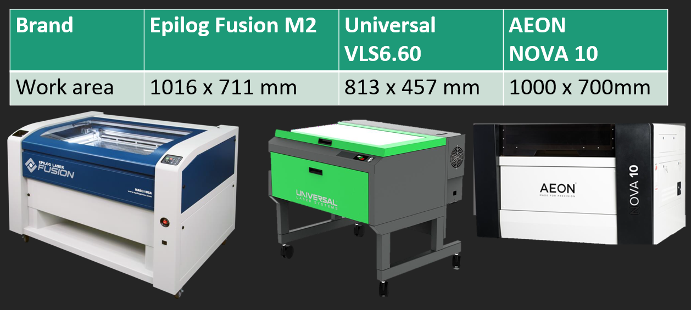
The approved materials are paper, cardboard, plywood and acrylic, no thicker than 5mm. The prohibited materials are PVC, metal, foam and rubber.
It is strongly encouraged for us to draw out our designs and layout nicely before going to the laser cutter as we need to be time efficient and planning can help save resources. We also need to learn a bit of how the settings of each laser cutter's control panel works.
Some files that are accepted by Corel Draw (the software that links to the laser cutter settings): DXF, PDF, PNG, JPG. To know which file format to work on for cutting and engraving, we need to recall the difference between vector and rastor. (Refer to Computer Aided Design)
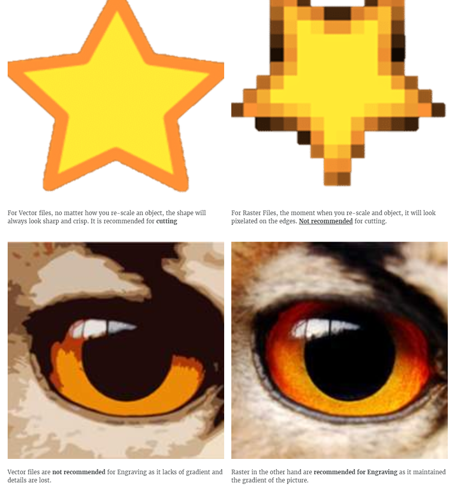
Next, decide whether you want to vector cut, vector engraving (scoring), or raster engraving. Set the colours to be RGB when porting into Corel Draw, then adjust the line weight accordingly.
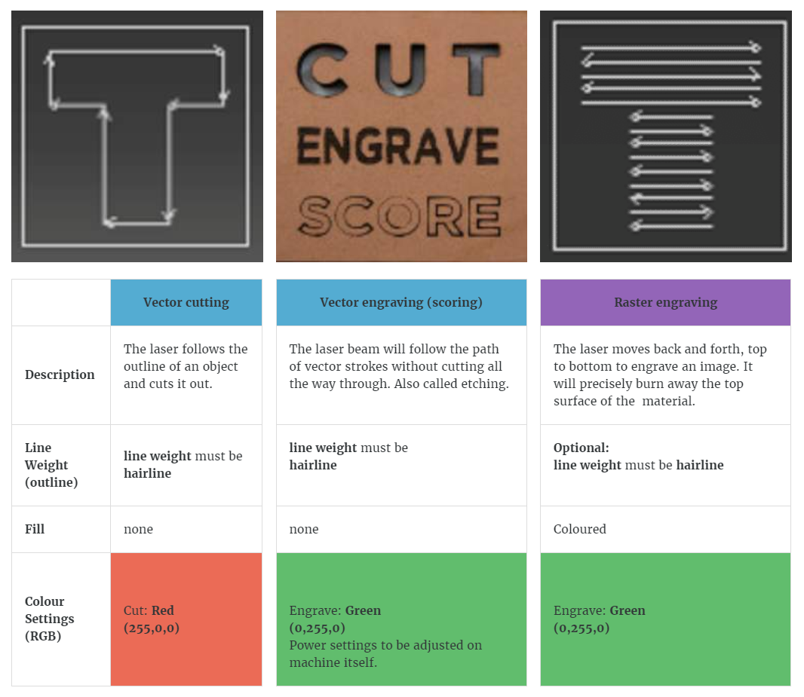
After importing/opening files into CorelDraw, we should adjust the line weight and Fill. The explanation of laser cutter controllers will not be explained here.
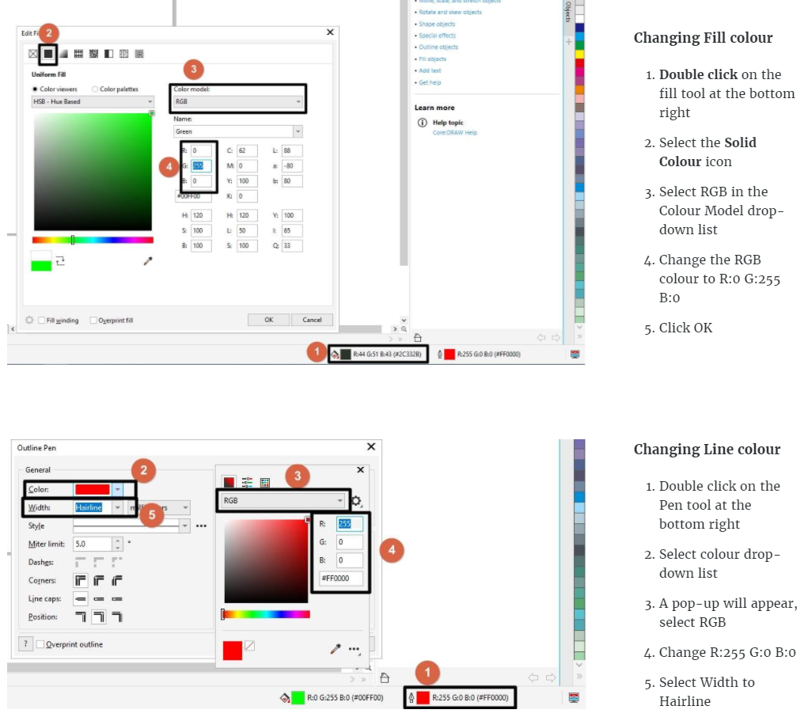
Chamfers and joints - A chamfer is a corner beveled at a 45-degree angle and is created by placing a three-cornered piece of material at a 90° joint, mainly to provide reinforcement especially if the model is large. A chamfer can also mean rounding an edge to reduce the sharpness. Creating t-slot joints allows pieces to interlock and secure in place without the need to weld or attach joints using other methods. Once in place, fasteners, nuts, locks and other items are then used to hold the pieces together. When designing, chamfers and joints can be considered.
Kerf - The laser burns away a portion of material when it cuts through. This is known as the laser kerf and ranges from 0.08mm – 1mm depending on the material type and other conditional factors. Besides the material properties and thickness, the focal length of the lens and pressure of compressed air have an impact too. We should take kerf into consideration if we need fine details or making press fit models. To do so, we will add (for protruding parts) or substract (for holes/inward surfaces) the kerf width from our component dimensions.
Parametric design - As mentioned in previous page briefly, parameters are used to make structures of the same features but different thickness, length or height. With just 1 change to one parameter, all the other dimensions be adjusted accordingly. That saves a lot of time to redesign again.
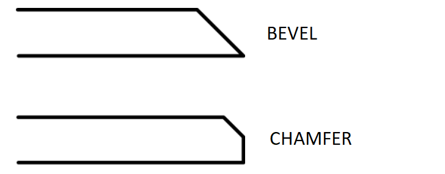 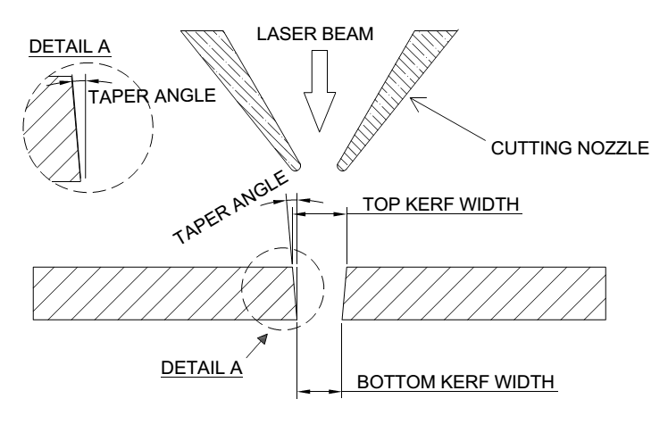 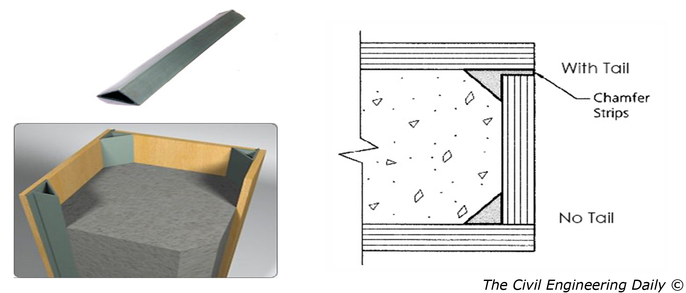 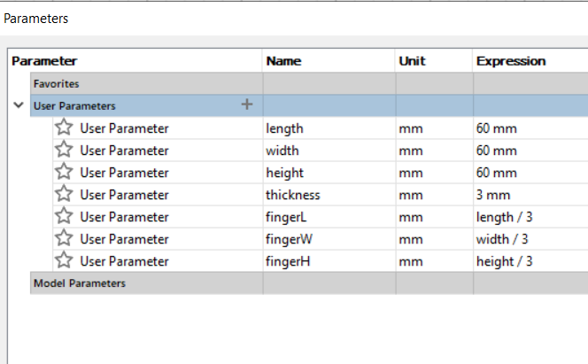
Source: FABLAB@SP (Blackboard)
When we went to school on 26 June, we are given the opportunity to cut out 2mm × 2mm squares from a recycled 3mm plywood. The main purpose was to perform test cuts using different speed and power of the laser cutter (Epilog @ T11C). The inital speed is set high and power is set low. As the speed is decreased and/or the power is increased, the cut is made deeper. We also measured the squares using a vernier caliper to determine the kerf, which was about 0.2mm. I took a picture of a press-fit box done by Mr Dorville for the previous class.
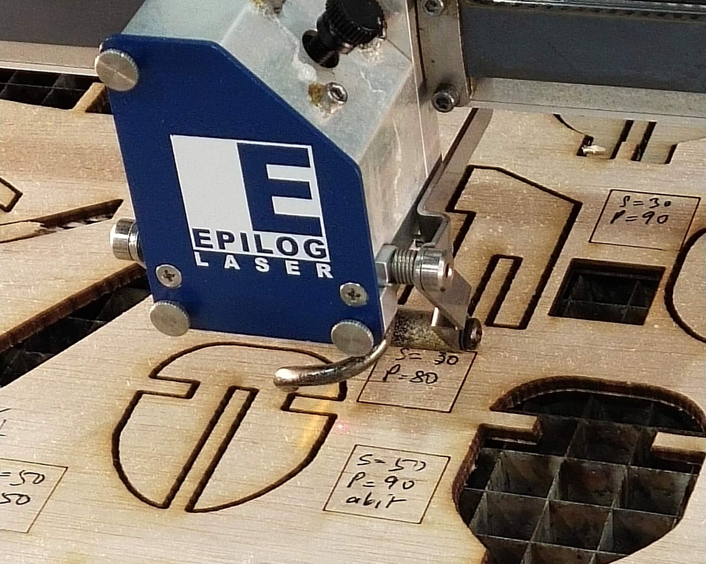 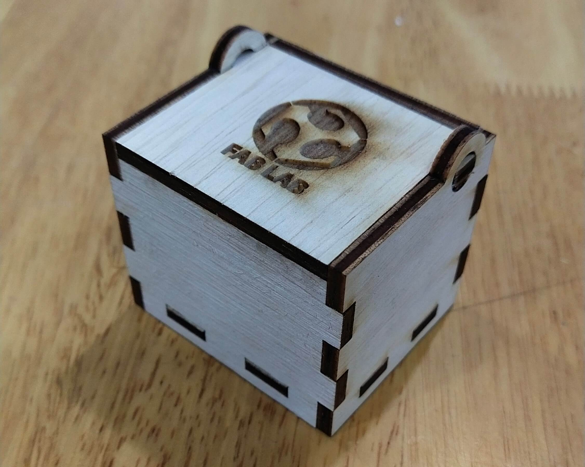
For assignment, my press-fit design is in both Computer Aided Design and Module Project. Here's my design done using Fusion 360, as well as the layout of the .DXF sketches done using Inkscape, which I then sent to the laser cutter to cut.
| Parameters: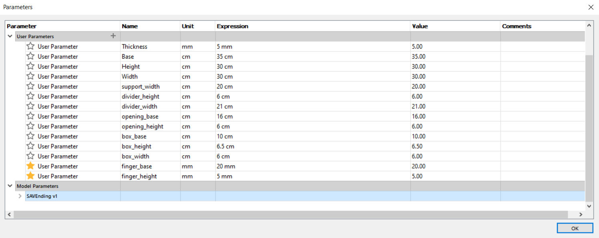 | Design: |
| Assembly: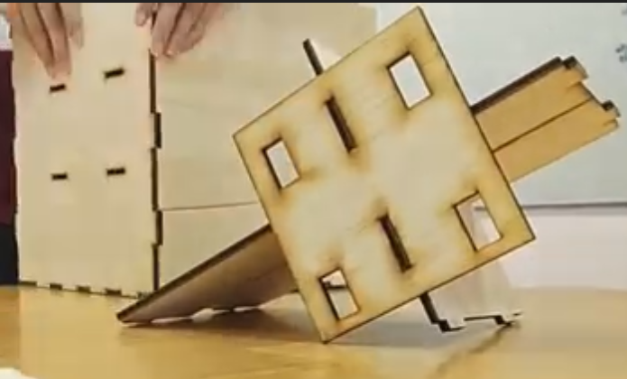 | Laser cutting: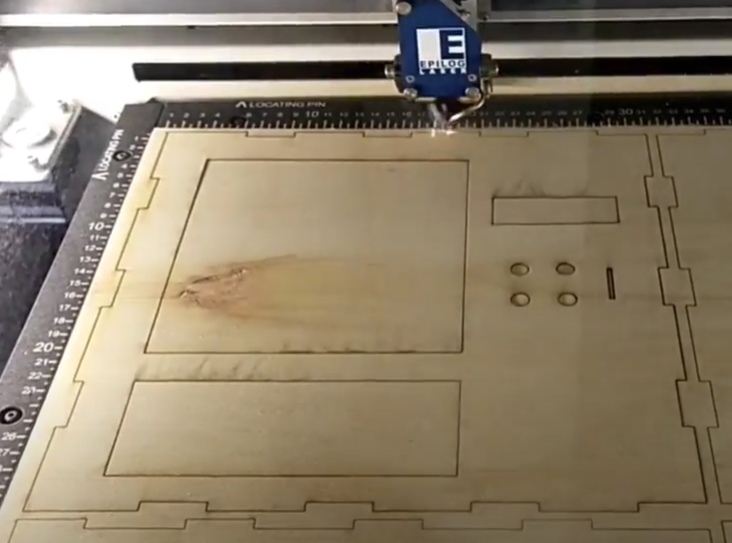 |